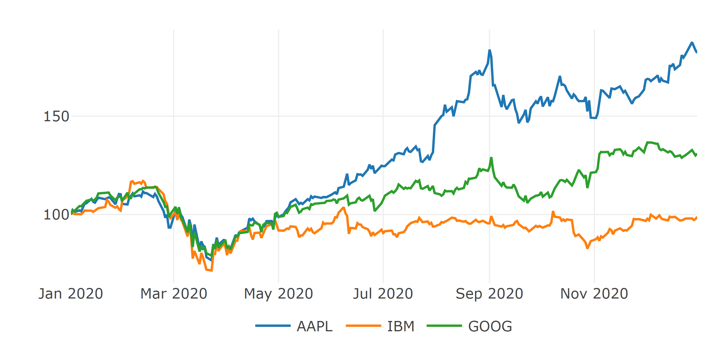

Chapter 4 Challenges of Passiv Investing
In this Chapter we will discuss two common challenges of Passiv-Investing and create simple examples to test the PSO. The first one is the mean-variance portfolio (MVP) from the modern portfolio theory of Markowitz which is simply said an optimal allocation of assets regarding risk and return. The second challenge is the index-tracking-problem which tries to construct a portfolio which has a minimal tracking error to a given benchmark.
4.1 Mean-variance portfolio (MVP)
Markowitz has shown that diversifying the risk on multiple assets will reduce the overall risk of the portfolio. This result was the beginning of the widely used modern portfolio theorie which uses mathematical models to archive portfolios with minimal variance for a given return target. All these optimal portfolios for a given return target are called efficient and create the efficient frontier.
4.1.1 MVP calculation
We have \(N\) assets and its returns on \(T\) diffrent days which creates a return matrix \(R\). Each element \(R_{t,i}\) contains the return of the \(i\)-th asset on day \(t\). The covariance matrix of the returns is \(\textstyle\sum\) and the expected returns are \(\mu\). The MVP with risk aversion parameter \(\lambda\) like shown in (Maringer 2005) minimizes the following problem:
file:///C:/Users/Axel/Desktop/Master-Thesis-All/Ziel%20was%20beantwortet%20werden%20soll/Quellen%20nur%20wichtige/Maringer2005_Book_PortfolioManagementWithHeurist.pdf
https://bookdown.org/shenjian0824/portr/port-opt.html
\[\begin{equation}
\underset{w}{minimize} \ \ \ \lambda \ w^T \textstyle\sum w - (1-\lambda) \ w^T\mu
\tag{4.1}
\end{equation}\]
The risk aversion parameter \(\lambda\) defines the trade-off between risk and return. \(\lambda = 1\) results in a minimum variance portfolio and \(\lambda = 0\) results in a maximum return portfolio. All possible \(\lambda \in [0, 1]\) represent the efficient frontier.
4.1.2 MVP example
We will analyse a small example to understand the meaning of the efficient frontier without going into detail how it was solved. First of all we are pulling the daily returns of 3 tickers (IBM, Google and Apple).
#```{r, fig.asp=0.4, fig.align='center', out.width="100%"}
returns <- get_prices_and_returns_av(choosen_tickers = c("IBM", "GOOG", "AAPL"), min_date = as.Date("2020-01-01"), max_date = as.Date("2021-01-01"))[["daily_returns"]]
p <- plotly_line_chart_xts(ret_to_cumret(returns))
# if(pandoc_to()=="html"){
# p
# }else{
htmlwidgets::saveWidget(p, "p.html")
webshot2::webshot("p.html", "p.png", delay=1, zoom=4, vheight=300, vwidth = 600)
#}Now we can calculate the expected daily returns and the covariance matrix for the 3 assets:
mu <- as.vector((last(ret_to_cumret(returns))/100)^(1/nrow(returns))-1)
mu## [1] 0.00229618042 0.00098381820 -0.00008817616cov <- as.matrix(nearPD(cov(returns))$mat)
cov## AAPL GOOG IBM
## AAPL 0.0008653837 0.0005341920 0.0004365885
## GOOG 0.0005341920 0.0005832308 0.0004094512
## IBM 0.0004365885 0.0004094512 0.0006647623At this moment we have all the needed data to solve the MVP (4.1) with \(\lambda \in \{0.01, 0.02, ..., 0.99, 1\}\). Afterwords we calculate the annual returns and standard deviation and draw the efficient frontier and the composition of the portfolios:
4.2 Index-tracking portfolio (ITP)
Indices are baskets of assets which are used to track the performance of a specific group of assets. For example tracks the good known Standard and Poor’s 500 index (short: S&P 500) the largest 500 equitys in the United States. All indices are not investible and only serve for the visualisation of the performance of these groups of assets without transaction costs. Asset managements adopted these indices as benchmarks to compare there fund performances. Each fund has its own benchmark which contains roughly the same assets that could be purchased by the manager. If the fund under performs his benchmark, it could be a indicator for a bad decision from the fund manager. Thats why all fund managers are eager to beat there benchmarks with wisely choosen investments. The past has proven that this is rearly achived with activ managemnt after costs (quelle studie activ passiv). This is the reason why passiv managed funds with the goal to track there benchmarks are becoming more frequent. Exactly this can be archived with Index-tracking portfolios (ITP) which aim to replicate the performance of a benchmark. This can be done by either full-replication or sparse-replication. A full-replication, which produces the exact performance we aim for, isn’t possible in most cases because not all assets of a index are investable. And if so it wouldnt be wise ether because benchmarks with multiple indices can contain more than ten thousand single assets which will produce a huge amount of transaction costs. The most common way to go is a sparse replication of the performance. To do this the portfolio manager has to define his benchmark which has a great overlap with his investment universe of his fund. Afterwards he will reduce this universe by some rules of the investor, liqudity and avalability. Now he can start to optimize a portfolio, including the investors constraint, to replicate the benchmark performance. Usually, this is done by reducing the difference between the daily returns of the ITP and the benchmark:
\[ minimize \ \ Var(r_{p}-r_{bm}) \] First we need to substitude \(r_{p}\) to get the portfolio weights \(w\) as follows: \[ r_{p} = R * w \] Afterwards we solve the Variance: \[ Var(r_{p}-r_{bm}) = Var(R * w - r_{bm}) = Var(R * w) + Var(r_{bm}) - 2 \cdot Cov(R*w,r_{bm}) = Var(R * w) + Var(r_{bm}) - 2 \cdot Var(r_{bm}) \cdot \beta^T * w \]